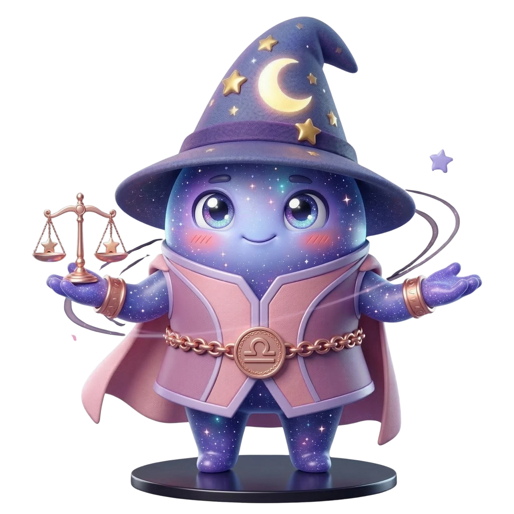

Burç Profili
Günlük Terazi Yorumumu Oku
→
Terazi Burcu
23 Eylül - 22 Ekim
ElementHava
YöneticiVenüs
NitelikÖncü
Terazi Takımyıldızı
Terazi, Hava elementinin öncü burcudur ve Venüs yönetimindedir. Denge, adalet, estetik ve ilişki kurma yeteneği onun temel özellikleridir.
Terazi Burcu Karakter Özellikleri
- Adaletli, dengeli, diplomatik
- Estetik duygusu çok gelişmiş
- Karar vermekte zorlanır, her iki tarafı dinler
- İlişki odaklı, yalnız hissetmek istemez
- Sevimli, sosyal, tartışmadan kaçınan
Terazi Burcu Aşk Hayatı
Terazi aşkta partnerini idealize eder. Romantizm, jest, kibarlık onun dilidir. Yalnız kalmaktan kaçınır; ilişki onun doğal halidir.
Terazi Burcu Kariyer ve Meslek
Hukuk, diplomasi, mimari, moda, iç mimari, danışmanlık, sanat. İnsanlarla çalışmayı gerektiren her işte iyi.
Terazi Burcu Uyumu
En İyi Uyum
İkizlerKovaAslanYay
Dikkat Edilmesi Gereken
YengeçOğlak
Partnerinle detaylı uyum analizi için Astro Dozi'de QR ile eşleşme yap.
Ünlü Terazi Burçları
Kim Kardashian
Will Smith
Bruno Mars
Gwyneth Paltrow
Cardi B
Terazi Burcu Şanslı Değerleri
Şanslı Sayı7
Şanslı RenkPembe
Şanslı GünCuma
Şanslı TaşOpal